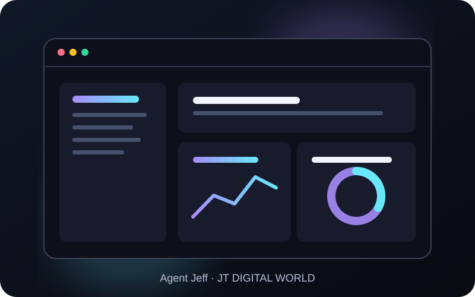
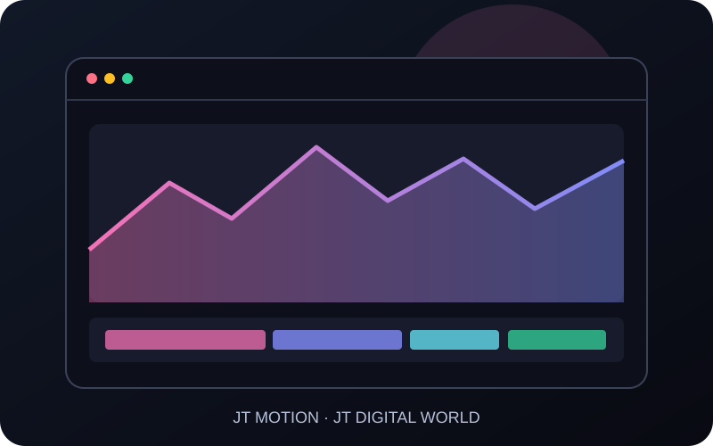
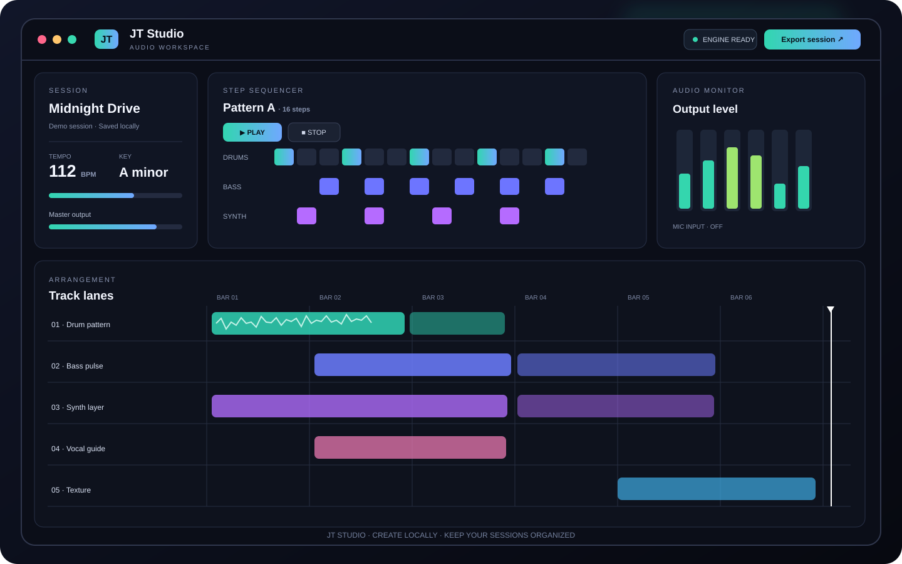
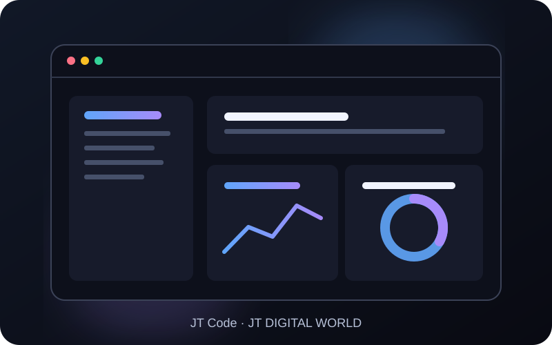
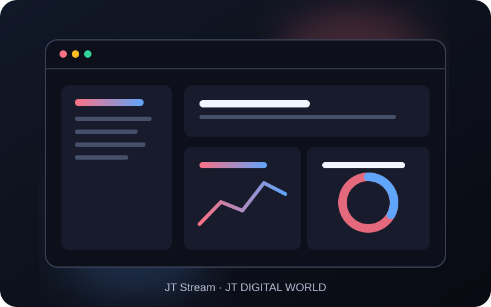

Every JT app, separately.
Agent Jeff now has a tested, unsigned Windows x64 pre-release. The remaining JT apps will show downloads only after their own build and release checks pass.
Agent Jeff v0.1.0 is available as an early Windows x64 pre-release. It is unsigned, so Windows SmartScreen may show a warning. Other JT apps remain unavailable until their own packages are built and tested.

AI DESKTOP AGENTJT / 01J TECH DIGITAL WORLD
Agent Jeff
Your system-wide AI coordinator for desktop workflows, automation, permissions and connected JT apps.
Checking official Agent Jeff releases…
Download Windows installer (.exe)Download portable ZIPDownload SHA-256 checksumsCheck official releases ↗Download source ZIP ↗J TECH DIGITAL WORLD
Jeff AI
A dedicated AI workspace for chat, writing, brainstorming and creative assistance.

VIDEO & PHOTOJT / 03J TECH DIGITAL WORLD
JT Motion
Video and photo editing with AI-assisted creative workflows.

AUDIO & MUSICJT / 04J TECH DIGITAL WORLD
JT Studio
Audio, music, recording, mixing and sound-production workspace.
J TECH DIGITAL WORLD
JT Design
Graphic design, illustration, layouts and presentation creation.

DEVELOPER TOOLSJT / 06J TECH DIGITAL WORLD
JT Code
AI-assisted software development, debugging, testing and project workflows.
J TECH DIGITAL WORLD
JT Cloud
Project files, synchronization, sharing and connected JT storage workflows.
J TECH DIGITAL WORLD
JT App Manager
Install, update, repair, diagnose and manage JT applications.

LIVE PRODUCTIONJT / 09J TECH DIGITAL WORLD
JT Stream
Live production with scenes, sources, recording, audio and streaming outputs.